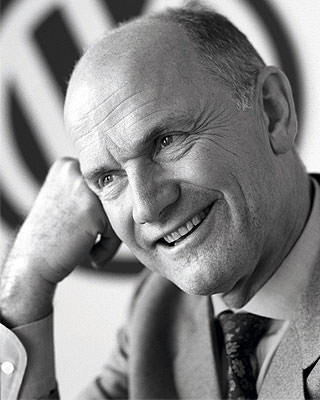
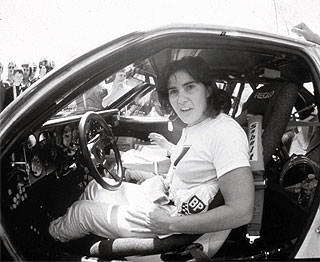

儘管Audi是第一個設計出前置引擎、前輪驅動 (FF) 車款的品牌，且百年來創下無數「第一」紀錄；不過，最為人所津津樂道的，當屬問世至今已超過30年的quattro智慧型恆時四輪傳動系統；因為它是Audi的獨創專屬技術與堅持，並讓Audi成為豪華車中、唯一搭載四輪傳動的品牌，也使得掛著四環廠徽的Audi無論在賽道或公路上，都有非常出色的表現。
以提升安全為設計出發點
不但是1938年便率先提倡新車發表需進行安全翻覆與撞擊測試的德國車廠，以「Vorsprung Durch Technik (進化科技 定義未來)」為品牌精神的Audi，在經過來自賽道與公路的不斷測試及研發後發現，只有讓4條車輪都能適時、適地的擁有適當之抓地力、才能真正提升車輛的主動安全；於是、1980年3月3日的瑞士日內瓦車展上，它們不僅向世人介紹了quattro智慧型恆時四輪傳動系統，也帶來了全球首款搭載quattro智慧型恆時四輪傳動系統的量產雙門轎跑車：以義大利文「4」為名的Audi quattro。
|  |
由於能夠在抓地力不佳的路面、擁有更好的抓地力及脫困能力，所以四輪傳動系統其實早在Audi將它應用於一般量產轎跑車、4門房車時，便已可見於需要應付高負載的貨車，以及喜歡去上山下海、四處撒野的SUV越野休旅車底盤之上；不過，當1977年時、Audi底盤研發部門的Jorg Bensinger成功將四輪傳動系統應用於Volkswagen的Iltis軍用越野車後，時任Audi設計師、被譽為史上最佳汽車設計師之一的Dr. Ferdinand Piech (即Porsche創辦人Dr. Ferdinand Porsche之外孫)，馬上便想到將它導入一般市售4門房車或轎跑車的可能，並於短短半年之後、解決了房車空間狹小、無處安裝驅動軸的問題，順利將四輪傳動系統裝在Audi 80 (現行A4車系的前身) 的底盤，且在乾地與雪地上、都獲得了脫胎換骨般的操控表現，也讓他們更確定了在一般量產4門房車等車型配置四輪驅動底盤的決心。
隨後、1980年3月的瑞士日內瓦車展上，Audi正式推出quattro智慧型恆時四輪傳動系統，並發表全球首款搭載此系統的量產雙門轎跑車：Audi quattro。
與傳統四輪驅動系統不同，Audi的quattro智慧型恆時四輪傳動系統，由於得安裝在底盤空間並不多的一般4門房車或掀背車型上，所以第一個遇到的難題，就是必須將整套系統「縮小」、且讓它的結構更為簡單。
結果Audi的工程師們在變速箱內安裝了一根26.3mm的空心傳動軸，使動力可以向前、後兩端傳送，並將一具差速器安裝在Audi 80的變速箱後方，透過空心傳動軸將動力傳送至前輪軸差速器，再於中央差速器後方連接另一根傳動軸、用來將引擎的動力傳遞到後軸差速器，以全新創舉、實現了四輪傳動的想法，而且重量輕巧、結構簡單。
此外，為了使搭載quattro智慧型恆時四輪傳動系統的車輛能夠應付更苛刻的路況，Audi的工程師還在中央差速器和後軸差速器附上了手動鎖定的功能，駕駛人可根據不同路況與個人喜好，透過中控台的開關來控制差速器的狀態。
1986年、Audi推出Audi 80 quattro，並帶來換裝Torsen中央差速器的第2代quattro智慧型恆時四輪傳動系統，Torsen這個字來自Torque-sensing Traction (扭力感應傳送器)、可以分配扭力；也就是說、第2代quattro智慧型恆時四輪傳動系統的前/後差速器可調節左/右輪的轉速差，而Torsen中央差速器則是負責調節前/後驅動軸的動力分配。所以在正常狀况下，動力是以50：50的分配比例傳遞到前/後軸，但當車輪出現打滑現象時，Torsen中央差速器便會主動將動力分配給抓地力較好的輪軸，不但分配動力輸出的速度較一般四輪驅動系統更快，且耐用度也更高。
而且不斷進化中的quattro智慧型恆時四輪傳動系統，不僅1998年導入液壓多片式離合器、2005年加入自鎖式中央差速器，2007與2008年則是分別研發出黏性耦合器與跑車型差速器，2010年後可透過兩套冠狀齒輪精密變動、自動計算最佳扭力分配，並於一般行車條件下，將前/後輪輸出比例控制在40：60，但若其中一支輪軸失去抓地力，差速器內產生的自鎖功能便會將大部分扭力傳遞至抓地力較佳的輪軸，最高可傳遞85%至後軸，或是將70%的扭力傳遞給前軸，大幅提升了車輛的主動安全。
也以讓腳趾擁有趾墊構造、具有強大攀爬能力之壁虎為標誌的quattro智慧型恆時四輪傳動系統，成為了Audi的另一個代名詞。
在WRC賽道上印證實力
既然出身於泥土與雪地，並在公路上發揚光大，quattro智慧型恆時四輪傳動系統當然得挑戰WRC (World Rally Champion) 世界越野拉力錦標賽，因為其實Audi創辦人之一的Dr.August Horch便是在1912到1914年間，連續3年拿下奧地利阿爾卑斯山國際越野拉力賽 (Austrian Alpine Rally) 冠軍而奠定其品牌基礎的；所以當1980年、Audi推出搭載quattro智慧型恆時四輪傳動系統的Audi quattro後，他們馬上也已一輛僅經過簡單改裝的Audi quattro賽車，投入了歐洲當地的拉力賽事，並於1981年、正式進軍WRC的征戰。
|  |
1981年的Monte Carlo拉力賽，雖然是Audi quattro賽車的處女秀，但在傳奇拉力車手Hannu Mikkola與副駕駛的操控下，這輛速度機器很輕鬆地便拿下了出賽WRC的首場勝利，並在第一年便奪得3場勝利、一鳴驚人；而且值得一提的是，Audi quattro賽車還在這年協助1951年誕生的法國籍女賽車手Michèle Mouton與搭擋，搶下了當年WRC年度車手亞軍的頭銜。
1982年、Audi quattro賽車再次擴大了它的優勢，不但共跑出7場WRC單站冠軍，Michèle Mouton也拿到了葡萄牙、巴西與希臘分站的冠軍，是第一位拿到WRC冠軍的女性車手，並幫助Audi車隊贏得了年度車隊冠軍的殊榮。
儘管1984年已創下讓對手難以超越的紀錄，但Audi繼續在1985年推出了Audi quattro賽車的進化版：擁有誇張空力套件與接近600匹馬力的Audi Sport quattro S1，且依舊不斷地站上頒獎臺，直到1986年3月5日，葡萄牙分站發生嚴重的車禍意外、造成3死30傷的慘劇，Audi正式宣布退出WRC，quattro智慧型恆時四輪驅動系統的冠軍王朝才劃下休止。
從賽車場走回現實世界
然而，Audi與quattro智慧型恆時四輪傳動系統雖然在1986年退出了WRC賽道，但它們卻沒有離開賽車，不但讓Michèle Mouton登上1985年美國Pikes Peak International Hill Climb (Pikes Peak國際登山拉力賽) 的冠軍，並開發出Audi 90 quattro IMSA-GTO等賽車、開始投入房車賽等不同賽事，且都有相當出色的成績， 不僅贏得了對手的尊重，也證明了quattro智慧型恆時四輪傳動系統的實力與耐用度。
除了在充滿泥土、飛沙與積雪的WRC賽道上稱霸外，Audi與quattro智慧型恆時四輪驅動系統的結合，也在現實世界中獲得了極大的成功，甚至今天幾乎每一款Audi車系都有搭載quattro智慧型恆時四輪傳動系統的車型，總數多達120輛之多；且根據原廠統計，自1980年推出Audi quattro至今、已有超過330萬輛搭載quattro智慧型恆時四輪傳動系統的不同車型在世界各地奔馳，於現實世界中、提供駕駛人出色的操控與主動安全防護。